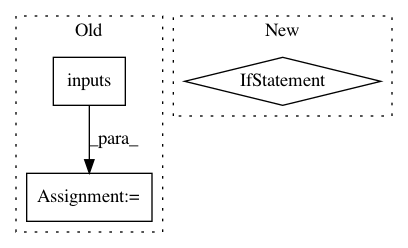

1c9347c6666d0bb8b9793b504e9cb597b75f1401,torch/onnx/utils.py,,_model_to_graph,#Any#Any#Any#Any#Any#Any#Any#Any#Any#Any#Any#Any#Any#Any#,426
Before Change
flatten_args, _ = torch._C._jit_flatten(args)
assert len(params) + len(flatten_args) == sum(1 for _ in graph.inputs())
input_and_param_names = [val.debugName() for val in graph.inputs()]
param_names = input_and_param_names[len(input_and_param_names) - len(params):]
params_dict = dict(zip(param_names, params))
After Change
_export_onnx_opset_version)
torch._C._jit_pass_dce_allow_deleting_nodes_with_side_effects(graph)
if _onnx_shape_inference:
torch._C._jit_pass_onnx_graph_shape_type_inference(graph, params_dict, _export_onnx_opset_version)
params_dict = torch._C._jit_pass_onnx_eliminate_unused_items(graph, params_dict)
// For ONNX opset < 9, constants only have three data types: float16, float, double.
// In this pass transform constants of other data types to float/double + cast operator.
In pattern: SUPERPATTERN
Frequency: 3
Non-data size: 3
Instances
Project Name: pytorch/pytorch
Commit Name: 1c9347c6666d0bb8b9793b504e9cb597b75f1401
Time: 2021-01-27
Author: bowbao@microsoft.com
File Name: torch/onnx/utils.py
Class Name:
Method Name: _model_to_graph
Project Name: Microsoft/nni
Commit Name: f7b7edac5b9e329ffdda30d710f68db71d08e065
Time: 2020-11-22
Author: 38930155+chicm-ms@users.noreply.github.com
File Name: nni/common/graph_utils.py
Class Name: TorchModuleGraph
Method Name: _build_graph
Project Name: galeone/dynamic-training-bench
Commit Name: 0a68639f4c33323274e7829b9349d0170dc6c8ea
Time: 2017-02-08
Author: nessuno@nerdz.eu
File Name: evaluate.py
Class Name:
Method Name: